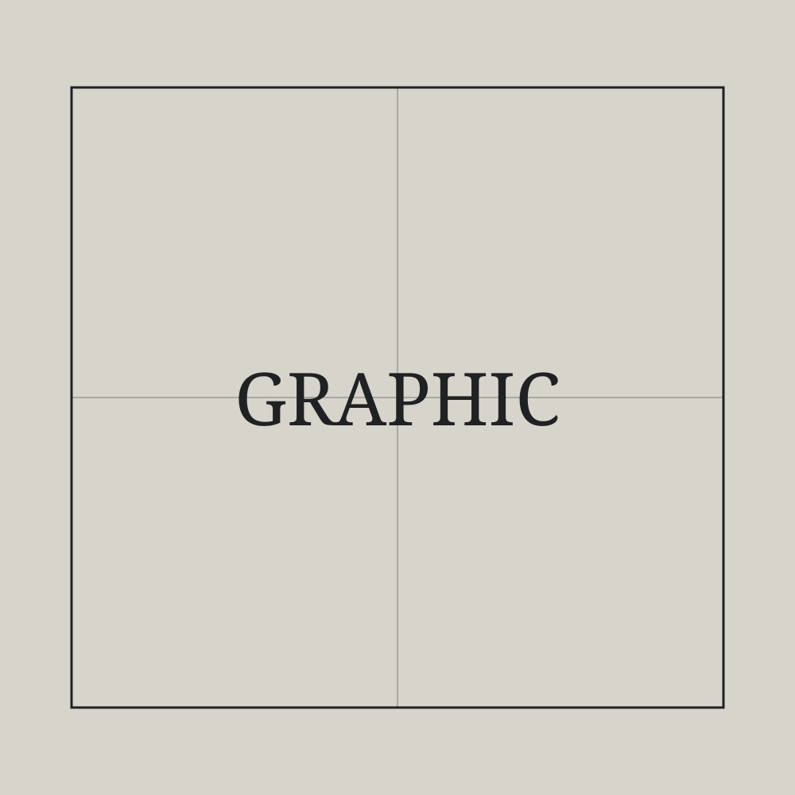
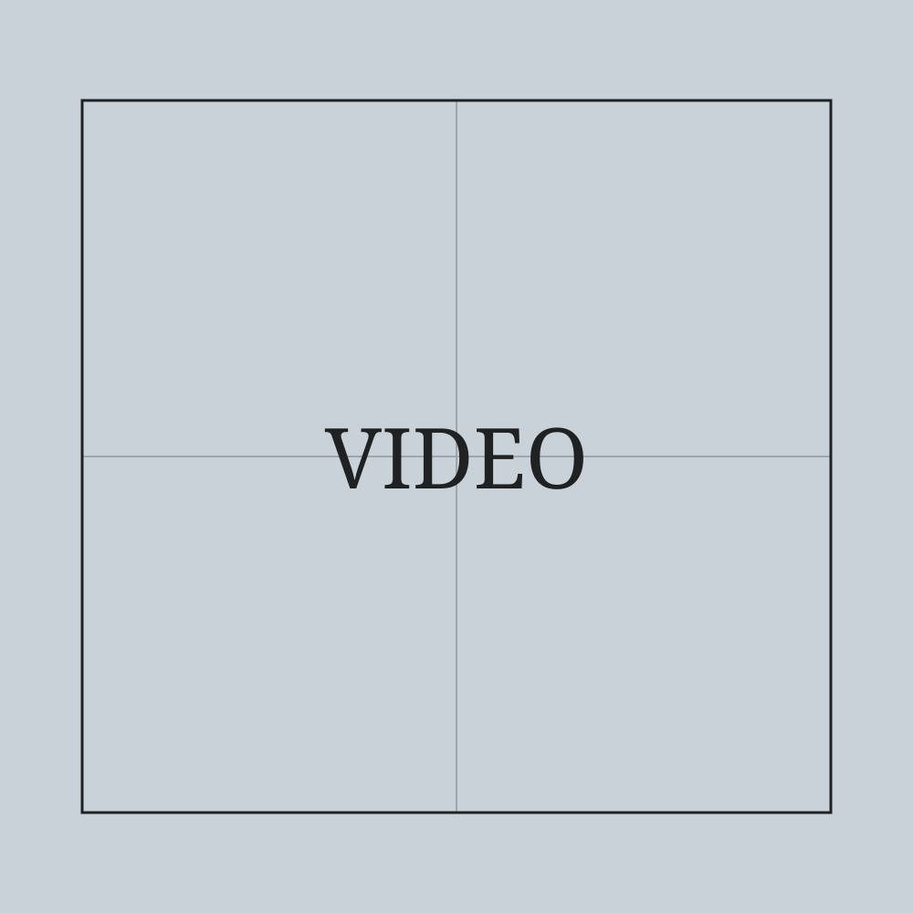
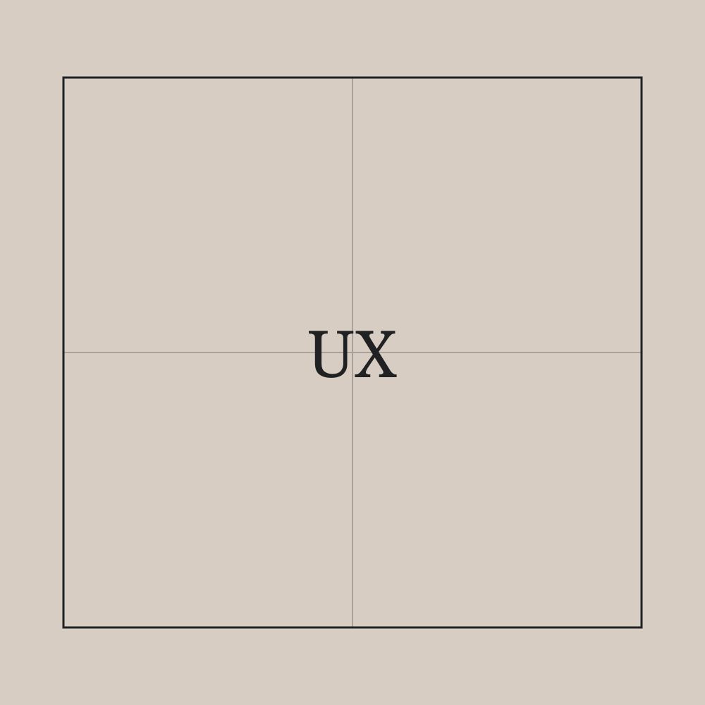
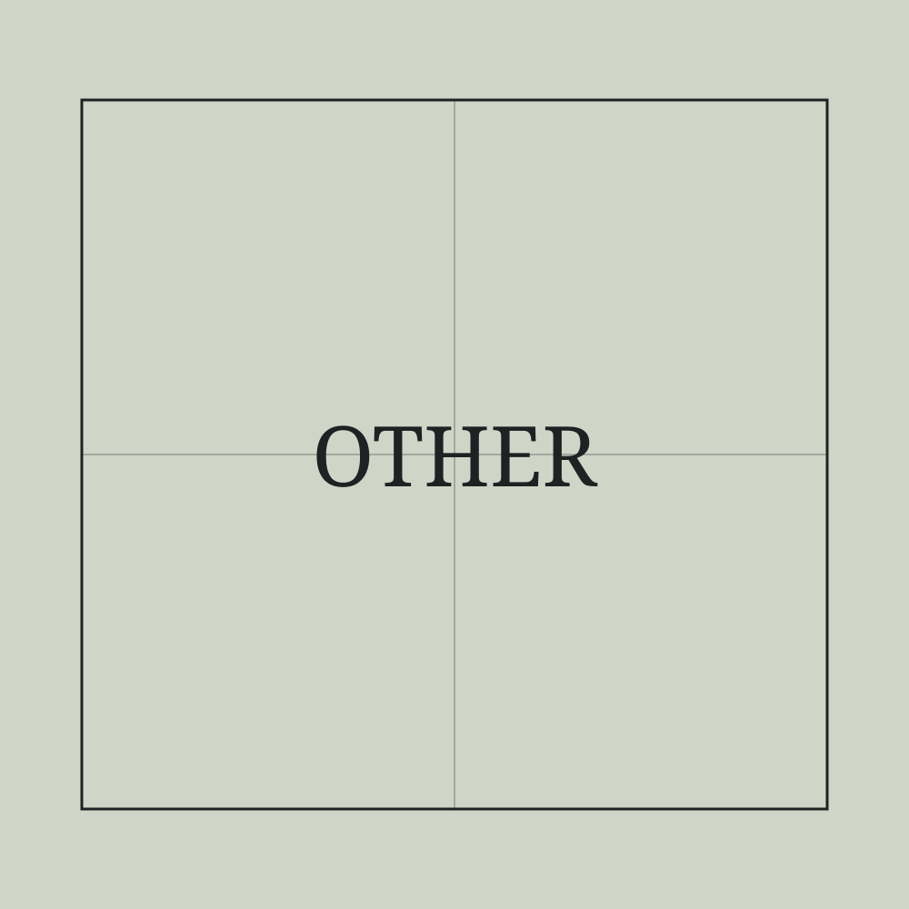

Main page
From Ruben Giovannoni's personal archive
An index of selected design work, moving-image projects, digital products, experiments and notes. This prototype reorganises the existing portfolio as a browsable archive rather than a sequence of portfolio case studies.

Graphic DesignIdentity, sports, print, visual systems

Video ProductionProduction, editing, post-production

UX / Digital DesignInterfaces, prototypes and case studies

Other ProjectsRadio, podcasts and independent work
Selected entries
- Parco dei Pio
- Fortitudo Pallacanestro Bologna 103
- Ludwig Schneider Project
- Kind Deals London
- Radio & podcasts
About this archive
The site is intentionally organised like a small encyclopedia: projects are pages, disciplines are categories, and shorter fragments can live as notes. Pages can later cross-link by client, year, discipline or subject.